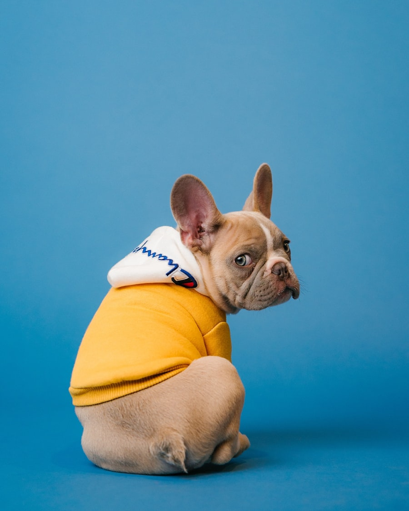
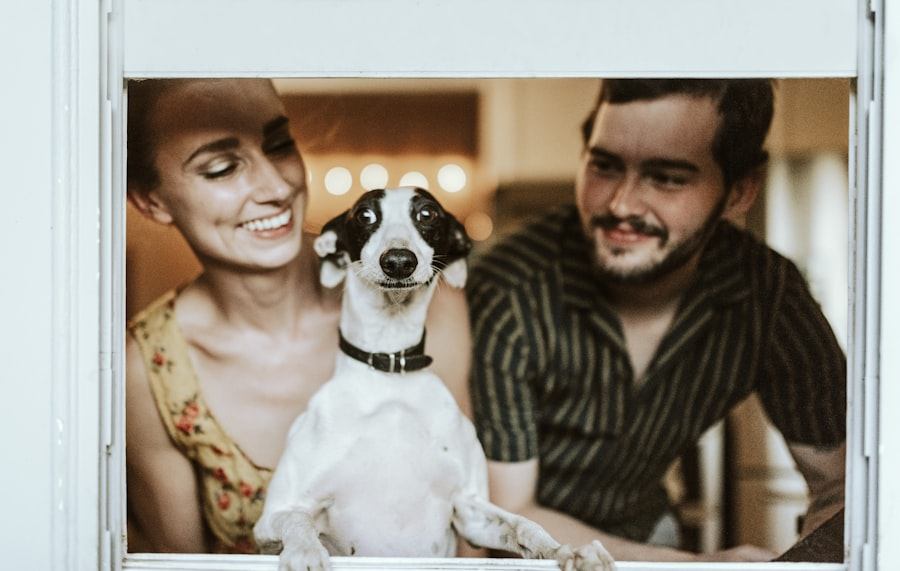
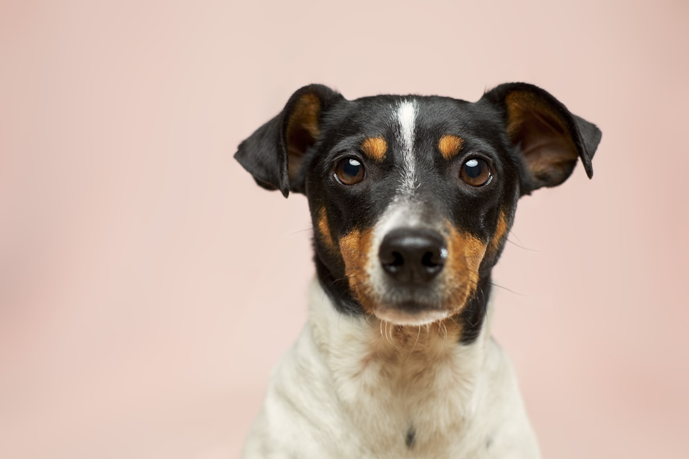
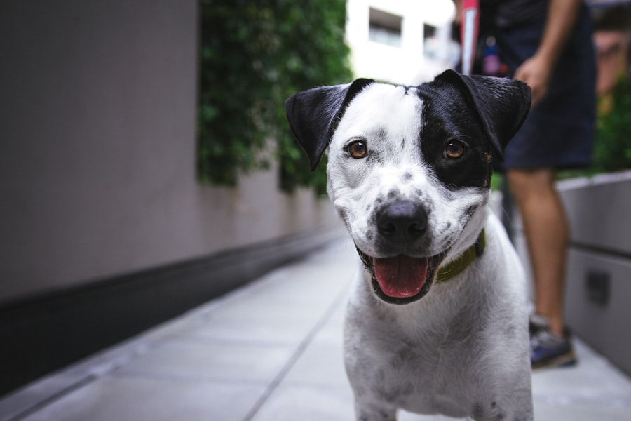
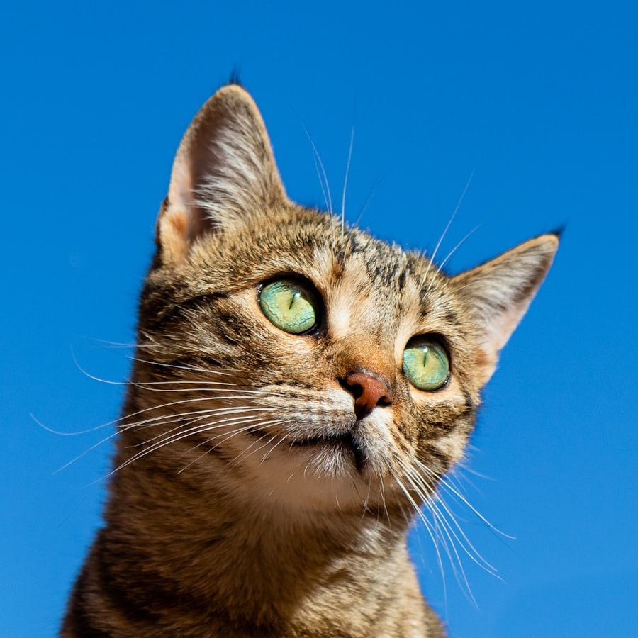
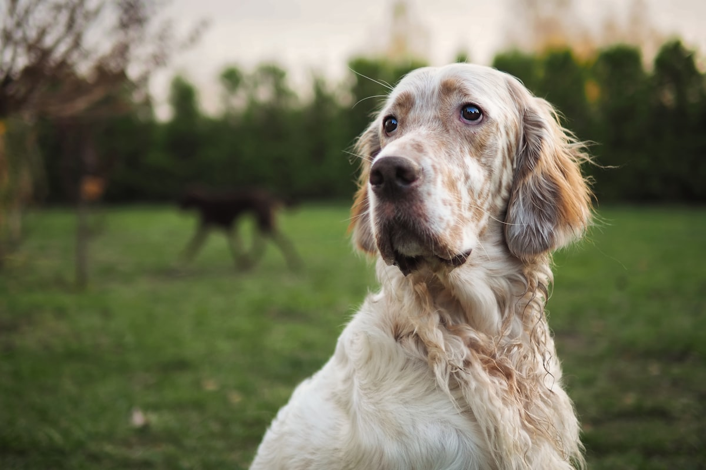
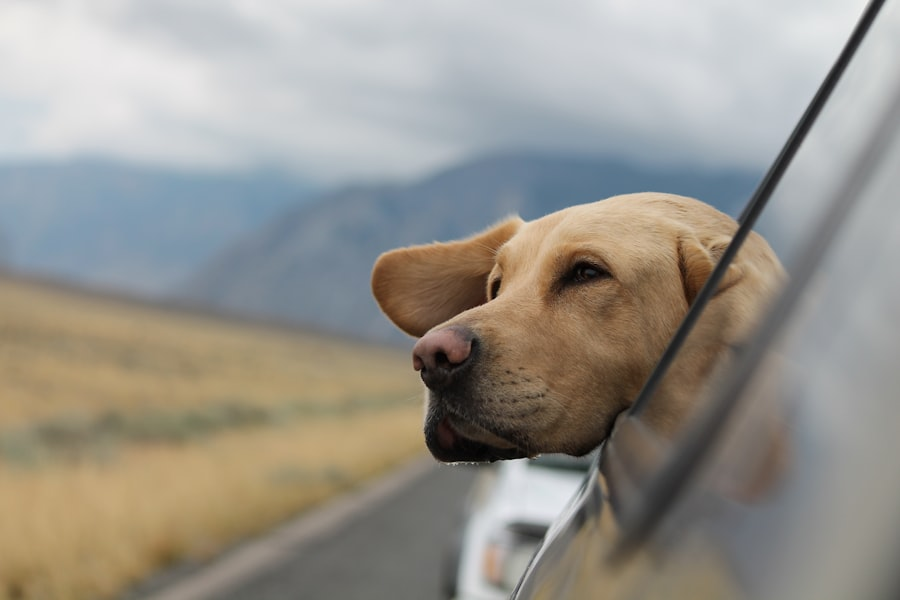
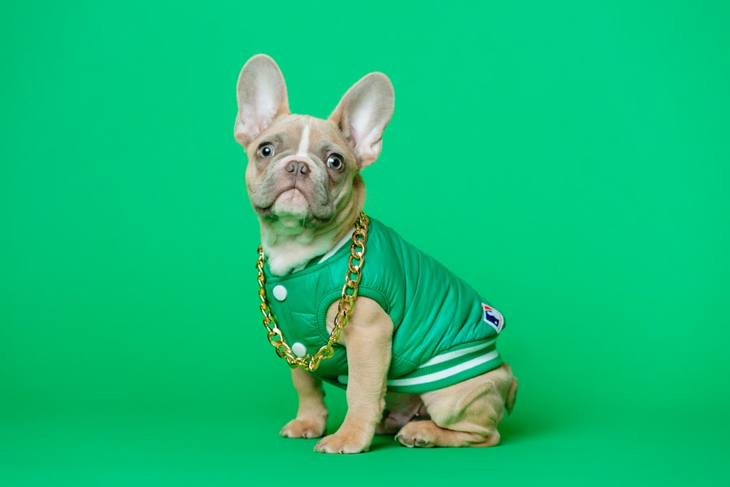
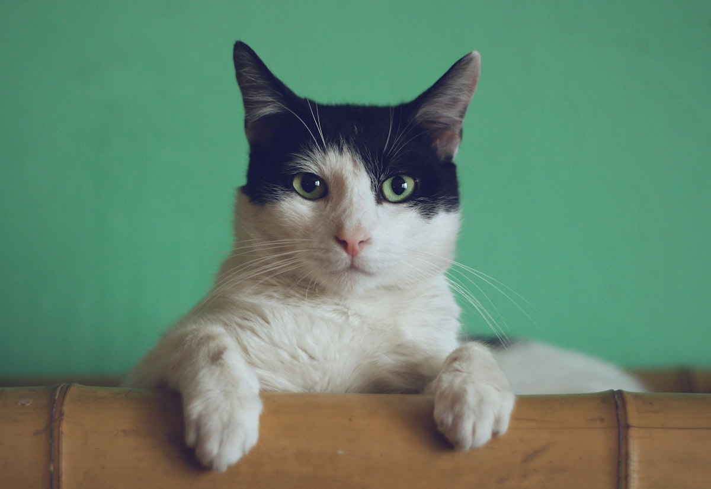

Grooming, bathing, nail trimming, dog walking and pet sitting — hands-on care by people who genuinely love animals. Hillcrest's most trusted pet services team.
🐾 Dog Grooming·🛁 Full Bath & Blow Dry·✂️ Nail Trimming·🦮 Dog Walking·🏠 Pet Sitting·😺 Cat Care·📍 Hillcrest, Durban·⭐ 4.8 Google Rating·🐾 Dog Grooming·🛁 Full Bath & Blow Dry·✂️ Nail Trimming·🦮 Dog Walking·🏠 Pet Sitting·😺 Cat Care·📍 Hillcrest, Durban·⭐ 4.8 Google Rating·
4.8★ · 31 Reviews
About Dimitri Pet Services
Hillcrest's pet care specialists
We're a passionate pet care team based in Hillcrest, Upper Highway — and every animal that comes through our doors gets the same level of attention we'd give our own. From full grooming sessions to daily dog walks and overnight sitting, we handle it all with care and consistency.
"Pets deserve the same care and respect as every other member of the family."
31 Google reviews. A 4.8-star rating. And a growing community of Hillcrest pet owners who trust us with their animals every week. That trust means everything to us — and it shows in how we work.
4.8★
Google Rating
31
Happy Clients
5+
Services Offered
What We Do
Full-service pet care
🐕
Dog Grooming & Bath
Full grooming service including a relaxing bath, blow dry, brushing, de-shedding and a breed-appropriate cut. We work at a calm pace — no rush, no stress for your dog.
BathBlow DryTrimDe-shed

✂️
Nail Trimming & Ear Cleaning
Quick, safe nail trims done with care — especially important for anxious dogs. We also offer ear cleaning and paw pad care to keep your pet comfortable and healthy between full grooming sessions.
Nail TrimEar CleanPaw Care
🦮
Dog Walking
Regular walks keep dogs physically active and mentally stimulated. We offer solo and small-group walks in the Hillcrest/Upper Highway area, with updates sent to you so you always know your dog is safe and happy.
Solo WalksGroup WalksUpdates

🏠
Pet Sitting & Home Visits
Travelling or working long hours? We come to your home for feeding, playtime, medication administration and company — so your pet stays in their own environment, stress-free. Also available for cats and small animals.
DogsCatsHome VisitsOvernight
Our Pets
Happy animals, happy owners
The animals we care for every week — fluffy, muddy, sleepy, excited and everything in between.







Get in Touch
Ready to book?
Call or WhatsApp us directly to book a grooming session, arrange a dog walk, or ask about our pet sitting availability.
Breed, coat type and lifestyle all affect how often your dog needs professional grooming. Here's the practical guide we give every new client.
Read article
Health
Why Nail Length Matters More Than You Think
Overgrown nails affect your dog's posture, gait and joint health. Most owners don't realise how much damage long nails cause over time.
Read article
Wellness
How Much Exercise Does Your Dog Actually Need?
It depends far more on breed and age than most owners realise. Under-exercised dogs develop anxiety, destructive behaviour and weight problems.
Read article
Behaviour
Pet Sitting vs. Kennels: What's Better for Your Dog?
Kennels work for some dogs and are stressful for others. Here's how to decide which option is right for your pet's personality and needs.
Read article
Local
Best Dog-Walking Spots in Hillcrest & Upper Highway
The best trails, parks and open spaces within a short drive of Hillcrest — rated for off-lead freedom, terrain and how dog-friendly the area is.
Read article
Care
Caring for an Older Dog: What Changes and Why
Senior dogs need adjusted grooming routines, gentler handling and more regular check-ins. Here's what to watch for as your dog gets older.
Read article
Grooming
How Often Should You Groom Your Dog?
The answer depends on three things: breed, coat type and lifestyle. Most owners either groom too infrequently (matting, skin issues) or are unsure whether they're overgrooming. Here's the simple breakdown.
Short-coated dogs (Labradors, Boxers, Dachshunds) need a professional groom every 8–12 weeks. Regular bathing at home between visits keeps them clean. Their coats don't mat but they do shed — a de-shedding treatment every few months makes a real difference.
Medium-coated dogs (Golden Retrievers, Spaniels, Border Collies) need grooming every 6–8 weeks. Their coats tangle behind the ears and under the legs particularly quickly. Don't wait until you can feel matting — it's painful to remove and can require shaving.
Long-coated or curly dogs (Maltese, Poodles, Bichon Frise) need professional grooming every 4–6 weeks. These breeds don't shed but their coats grow continuously and mat quickly. Regular brushing at home between visits is essential.
Double-coated dogs (Huskies, German Shepherds, Malamutes) need grooming every 8 weeks and particularly benefit from a professional de-shedding treatment twice a year. Never shave a double coat — it doesn't reduce shedding and damages the coat permanently.
Contact Dimitri Pet Services to discuss the right grooming schedule for your breed — 079 989 8197.
Health
Why Nail Length Matters More Than You Think
Most pet owners think of nail trimming as a cosmetic service. It isn't. Long nails affect every aspect of how your dog moves — and the damage accumulates over years.
The posture problem. When nails are too long, they push against hard floors and force your dog's feet to splay outward. To compensate, the dog shifts its weight backward. Over months and years, this creates pressure on the joints, hips and spine — and is a contributor to premature arthritis in older dogs.
The pain problem. Long nails hit the ground with every step. On hard floors, this constant pressure sends a signal up through the nail into the quick — the nerve and blood vessel inside. It's a low-grade, constant discomfort that many owners never see directly but that affects their dog's mood and activity levels.
The snagging problem. Long nails snag on carpet, grass and their own bedding. This can lead to torn nails — one of the most painful injuries a dog can experience, and one that often requires veterinary treatment.
How often? Most dogs need their nails trimmed every 4–6 weeks. Active dogs who walk on hard surfaces regularly may need less frequent trimming. Dogs who spend most time indoors or on grass may need more.
We include nail trimming in all our full grooming packages and offer standalone nail trim appointments — call 079 989 8197.
Wellness
How Much Exercise Does Your Dog Actually Need?
The generic advice of "30 minutes a day" is almost useless — a Border Collie and a Basset Hound have completely different needs. Here's how to think about it properly.
High-energy working breeds (Huskies, Border Collies, German Shepherds, Vizslas) need 1.5–2 hours of vigorous exercise per day. A short walk simply isn't enough. These dogs need to run, fetch, swim or work. Without adequate exercise, they develop anxiety, destructive behaviour and become very hard to manage.
Medium-energy dogs (Labradors, Golden Retrievers, Spaniels, Standard Poodles) do well with 45–60 minutes of brisk walking per day, split into two sessions. They enjoy swimming, fetch and off-lead time in safe areas.
Lower-energy breeds (Bulldogs, Basset Hounds, Shih Tzus, older dogs) are happy with 20–30 minutes a day in two short sessions. In KZN's heat, these breeds especially should walk in the early morning or evening only.
Puppies need less exercise than adult dogs — not more. The rule of thumb is 5 minutes per month of age, twice per day. Too much exercise on developing joints causes long-term damage.
We offer solo and small group dog walks in Hillcrest and the Upper Highway area. WhatsApp 079 989 8197 to arrange regular walks.
Behaviour
Pet Sitting vs. Kennels: What's Better for Your Dog?
Both have a place — but they're not interchangeable. The right choice depends entirely on your dog's personality, and most owners make the decision based on cost or convenience rather than what actually suits their animal.
When kennels work well: confident, sociable dogs who don't show separation anxiety tend to do fine in kennels. The constant activity and company of other dogs can actually be enriching for an extroverted, resilient dog. A dog who has stayed at a kennel before and returned happy is usually fine going back.
When kennels cause stress: anxious dogs, dogs who have never experienced kennels, senior dogs, dogs with health conditions, and dogs who are closely bonded to one person all tend to struggle with kennel environments. The noise, unfamiliar smells, strange animals and loss of routine combine to create a stressful experience that can take weeks to recover from behaviorally.
What pet sitting offers: your dog stays in their own environment, on their own schedule, with someone they meet and can smell a few times before you leave. The transition is gradual and familiar. For anxious or older dogs, this difference is significant.
We offer home visit pet sitting in Hillcrest and the Upper Highway area. Introductory visits are always arranged before your travel dates — call 079 989 8197.
Local
Best Dog-Walking Spots in Hillcrest & Upper Highway
One of the best things about living in the Upper Highway area is the access to green space. Here's where we take our clients' dogs most often.
Krantzkloof Nature Reserve — The crown jewel of Upper Highway walking. Numerous trails ranging from easy valley walks to more challenging ridge hikes. Dogs on leash only in some sections, but the off-lead areas on certain trails are beautiful and safe. Spectacular views into the gorge. Watch for baboons.
Hillcrest Open Space/Firebreaks — The open grassland and firebreak areas around the Hillcrest Bowl and surrounds offer good space for energetic dogs. Informal, easy access, good for early morning walks before the heat kicks in.
Assagay trails — Quiet residential roads and some farm-adjacent paths make Assagay excellent for longer relaxed walks. Lower traffic and large properties mean more breathing room. Good for dogs who don't do well around traffic noise.
Waterfall Greenways — The newer residential areas have some well-maintained open spaces and paths. Excellent for early morning walks and good underfoot conditions year-round.
All our dog walking routes are chosen for safety, shade and off-lead options where appropriate. Call 079 989 8197 to arrange regular walks.
Care
Caring for an Older Dog: What Changes and Why
Dogs are considered senior from around 7–10 years depending on their size. Large breeds age faster — a Great Dane at 7 is elderly; a small Terrier at 7 is barely middle-aged. Understanding what changes, and why, helps you give your older dog the best possible quality of life.
Grooming adjustments. Senior dogs often have drier, thinner skin and may have lumps, bumps or arthritic joints that make standard grooming positions uncomfortable. A good groomer adapts to this — working around tender spots, using gentler products, and taking more breaks if needed. We always ask about health changes before grooming older clients.
Exercise changes. Older dogs still need movement, but shorter, more frequent, lower-impact sessions are better than long exhausting walks. Swimming is excellent for arthritic joints. Hard concrete and uneven terrain become harder on aging bodies — grass surfaces are preferable.
Nail trimming becomes more important. As dogs age and move less, their nails wear down less naturally. Combined with the posture changes that often come with arthritis, overgrown nails in senior dogs are a real welfare concern. Monthly nail trims are reasonable for many older dogs.
Routine matters more. Older dogs adapt poorly to sudden changes. If you need to travel, starting home visit pet sitting well before your trip (so your dog meets and recognises the sitter) reduces stress significantly.
We work gently and patiently with senior dogs — call Dimitri at 079 989 8197.
FAQs
Your questions, answered
What areas do you service?+
We're based in Hillcrest and primarily service the Upper Highway area — including Hillcrest, Kloof, Waterfall, Assagay, Gillitts and surrounding neighbourhoods. Contact us at 079 989 8197 to confirm availability in your area.
What's included in a full grooming session?+
A full groom includes a bath using quality shampoo suited to your dog's coat, blow dry, brushing, a breed-appropriate cut or tidy, nail trimming, ear cleaning and paw pad check. We'll discuss what your dog needs at the time of booking.
Can you handle anxious or reactive dogs?+
Yes — we have experience with dogs who are nervous around grooming, handling or new environments. We work at a slow pace, take breaks when needed, and never force a dog into a stressful position. If your dog has had bad experiences before, please let us know upfront so we can prepare properly.
How do I book a dog walk?+
Call or WhatsApp us on 079 989 8197. For regular walks, we'll arrange a meet-and-greet with you and your dog first. We offer solo walks (one dog, full attention) and small group walks (2–3 dogs max). You'll receive a message when we pick up and drop off your dog.
Do you do home visits for cats?+
Yes. We offer home visit pet sitting for cats — feeding, fresh water, litter box, playtime and general company. Most cats prefer staying at home while you travel, and we're experienced with cats across all temperaments, including those who hide at first.
How far in advance should I book?+
For grooming: 1–2 weeks is usually enough. For peak holiday periods (December, Easter, school holidays) we recommend booking 3–4 weeks in advance as availability fills quickly. For regular weekly dog walks, contact us to discuss your schedule and we'll fit you into our route.
What do I need to bring for grooming?+
Just your dog. Make sure vaccinations are up to date (we may ask for proof for first-time clients). If your dog has any medical conditions, allergies or is on any medication, please let us know before the appointment. A familiar toy or blanket can help nervous dogs settle.
Where are you located?+
We're based in Hillcrest in the Upper Highway area of Durban, KwaZulu-Natal. Contact us on 079 989 8197 for our exact address and directions. We're easy to reach from Kloof, Waterfall, Assagay and surrounding areas.